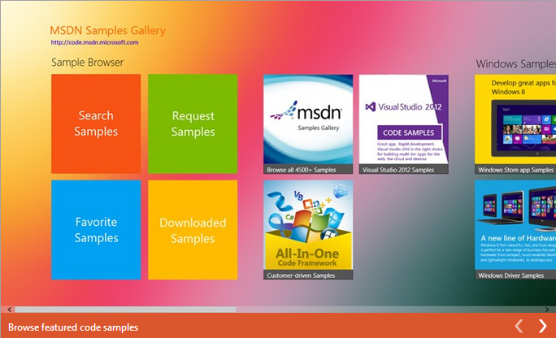

Windows Store Code Samples by All-In-One Code Framework
Windows Store app: How to convert Image to Base64 string
This sample demonstrates how to convert Image to Base64 string. The left part is the image and the right part is the converted base64 string.
